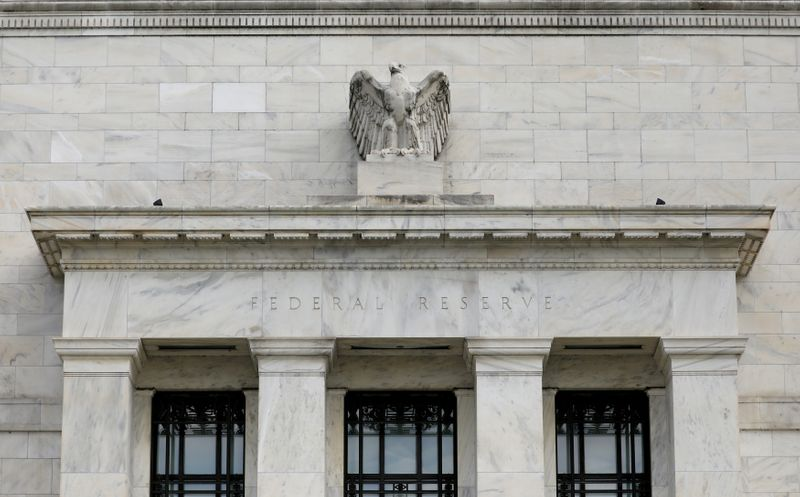

Take Five: Week of the central banks
(Reuters) – 1/ TIME TO PUSH BACK?
After a stunning selloff in U.S. Treasuries took benchmark 10-year yields above 1.6%, the highest in a year, the March 16-17 Federal Reserve meeting will be watched closely for hints policymakers are concerned about yields, asset bubbles and inflation.
A repricing of market interest rate expectations to anticipate a Fed hike as early as late 2022 is at odds with the Fed’s aim of keeping rates unchanged until the end of 2023.The Fed has appeared unperturbed so far by higher bond yields, but it may feel it’s time to push back against those rate-hike bets.
It is also expected to release fresh forecasts on economic growth as vaccines are distributed.
Graphic: Eurodollar futures and Fed hike expectations – https://fingfx.thomsonreuters.com/gfx/mkt/xlbpgxggmvq/image-1615481276720.png
2/ MIXING MESSAGES AT BOJ
The central bank which pioneered yield curve control faces one of its toughest policy reviews on March 18-19.
The Bank of Japan will likely insert clearer guidance in its statement on what it sees as an acceptable level of fluctuation in long-term interest rates, according to sources — a sign it won’t tolerate rises that hurt the economy.
Governor Haruhiko Kuroda and his deputy Masayoshi Amamiya have sent mixed messages on loosening the 10-year yield target band.Higher yields would acknowledge a global move higher but might spur unintended worries about policy tightening.
Given a nascent economic recovery, the BOJ may even suggest scope for more negative short-term rates.In the midst of this, financial year-end flows back into yen are accelerating.A currency rally will add to the BOJ’s headaches.
Graphic: BOJ balance sheet yields – https://fingfx.thomsonreuters.com/gfx/mkt/dgkvlewkypb/Pasted%20image%201615539011462.png
3/BOE, NORGES BANK TOO
Thursday brings central bank meetings in Britain and Norway.
The Bank of England is not seen unveiling additional policy easing despite concerns over the recent spike in borrowing costs.
Instead, any action such as upping the BoE’s bond-buying firepower is likely to come later in the year – perhaps in May, when the next set of economic forecasts emerge.
With first-quarter GDP data expected to show a near 4% drop on the back of pandemic-linked lockdowns and Brexit disruptions, economic recovery is expected to be gradual.A majority of economists polled by Reuters expect GDP will take two years to return to pre-COVID-19 levels.
Norges Bank is also tipped to keep rates unchanged but it may adopt a much more hawkish tone given signs of economic recovery in Norway, especially in housing.
Graphic: UK yield – https://fingfx.thomsonreuters.com/gfx/mkt/ygdpzgylkvw/UK%20yield.JPG
4/EMERGING RATES ON RISE
In emerging markets, meanwhile, the only way for interest rates to go may be up.That’s the message we might hear from several central banks over coming days.
Most have faced rising inflation pressures for some time but now they are also confronted by higher U.S. Treasury yields, which raise borrowing costs for everyone.For oil importers, Brent crude prices above $70 is an added problem — all this while economies are still reeling from the coronavirus impact.
Central banks in Brazil and Turkey — meeting on Wednesday and Thursday respectively — are most likely to raise rates.Markets will also find out on Thursday if Indonesia’s rate-cutting cycle has come to an end.
Egypt meanwhile is seen standing pat on Thursday even in the face of rising commodity prices and inflation nudging higher.
Graphic: EM central banks rate cuts – https://graphics.reuters.com/EMERGING-RATES/azgvojxxnpd/chart.png
5/ELECTIONS
In the euro area, investors’ focus turns to politics.
The German states of Baden-Wuerttemberg and Rhineland-Palatinate hold elections on Sunday that are seen as a key test of voter sentiment ahead of national polls in September which will determine who succeeds Angela Merkel as Chancellor.
The Baden-Wuerttemberg vote is one to watch, since a face mask procurement scandal has muddied the waters for Merkel’s Christian Democrats, whose leader Armin Laschet hopes to become the next Chancellor.
Then there are Dutch national elections on March 15-17, for which authorities are relaxing evening curfew rules introduced to combat the spread of COVID-19.Polls suggest Prime Minister Mark Rutte’s conservative VVD will remain the largest party, although public support has declined recently over his coronavirus policies.
Graphic: COVID-19 vaccinations – the race is on – https://fingfx.thomsonreuters.com/gfx/mkt/xklpyrkxrvg/theme1203.PNG
(Reporting by Saikat Chatterjee, Karin Strohecker and Dhara Ranasinghe in London, Gertrude Chavez-Dreyfuss and Kate Duguid in New York and Vidya Ranganathan in Singapore; Editing by Dhara Ranasinghe and Catherine Evans)
Posted On: 2021-03-12T00:00:00

Content Date: 2021-03-12
Download Date: 2021-04-17
Document ID: L0C04A8TY